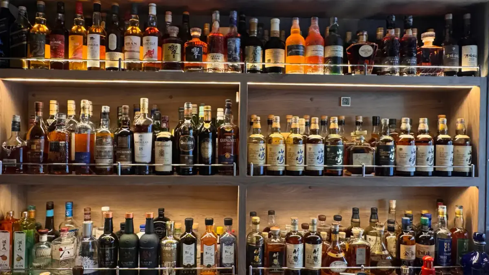

为什么要来这里品饮日本威士忌？
因为在这里，可以沿着一套完整的体系，理解日本威士忌的过去、现在与未来
我们所收藏的三得利与 Nikka，已经形成了横跨多个世代及不同产品线的完整体系。同时，我们也珍藏来自已经消失的日本蒸馏所的珍贵威士忌，包括不同年份与熟成年数的稀有原酒。
在历史酒款之外，我们还从日本新世代的小型独立蒸馏所中，精选能够代表各自风格的典型酒款，作为对比品鉴的样本。
仅响与山崎两个系列的库存深度，就已经远高于一般酒吧。更重要的是，这些酒并非只用于陈列，其中许多都可以实际开瓶，进行跨世代、跨产品线的对比品鉴。